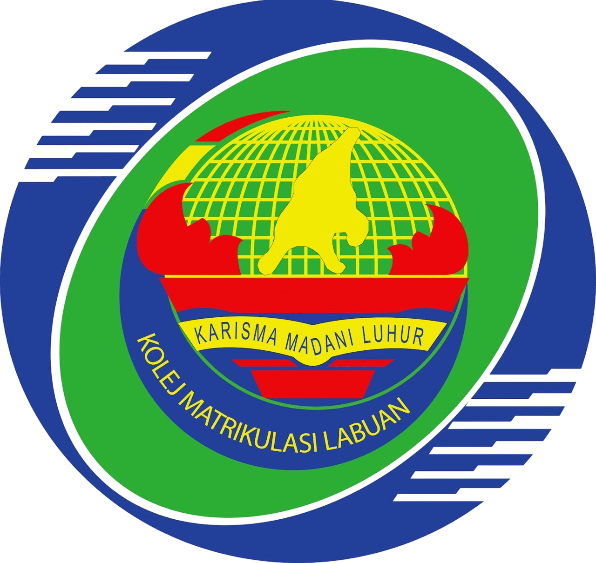
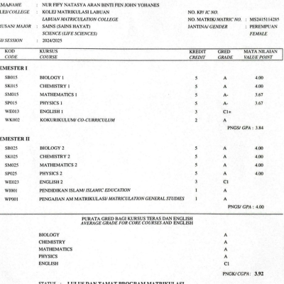
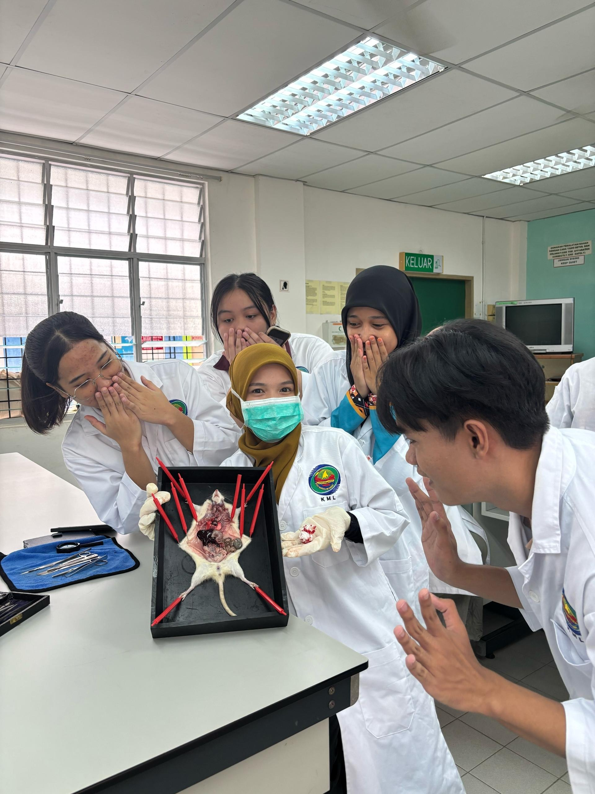
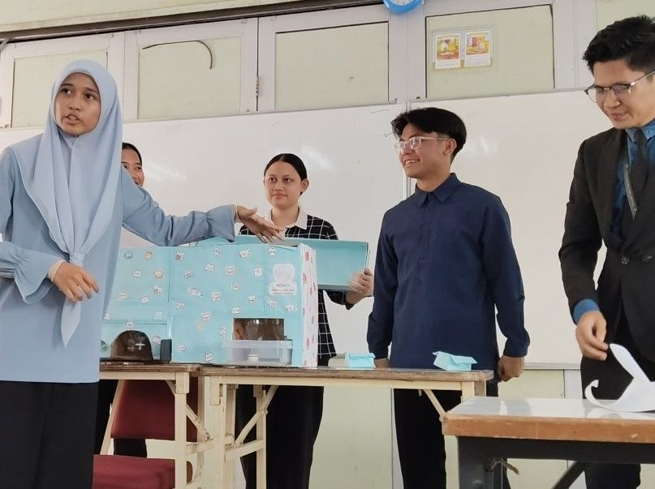

After completing SPM, I decided to pursue my studies through the matriculation programme. Alhamdulillah, I was accepted into Labuan Matriculation College under Module 1 in the two-semester system. During my time there, I gained valuable knowledge as I was exposed to various practical experiences, such as preparing professional resumes, ethics in interview sessions, and foster innovative thinking. In addition, the numerous laboratory experiments strengthened my attention to detail and analytical skills. These experiences helped me become a more precise, disciplined, and responsible individual. As a result, I have developed the habit of completing every task with dedication and throughness to achieve high-quality outcomes.


Bio Lab
Chemist Lab
Pengajian Am class; Debate activity.
English project. Presentation regarding the model "Meowchine"